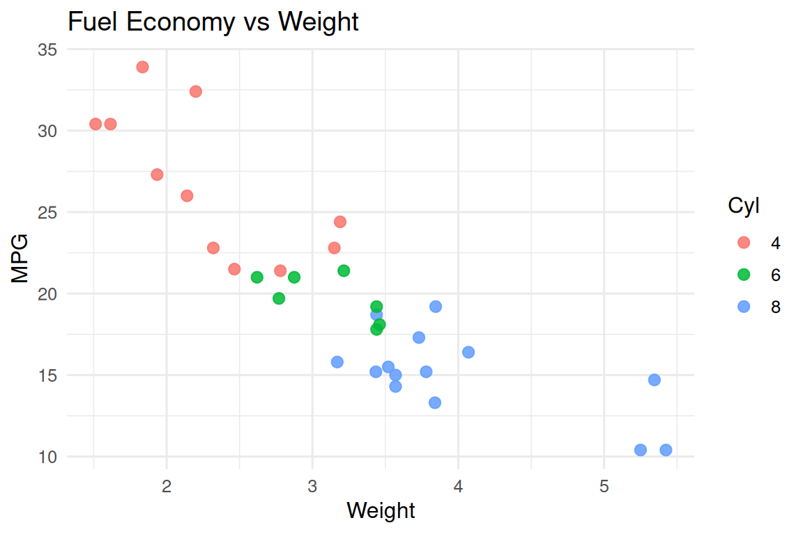
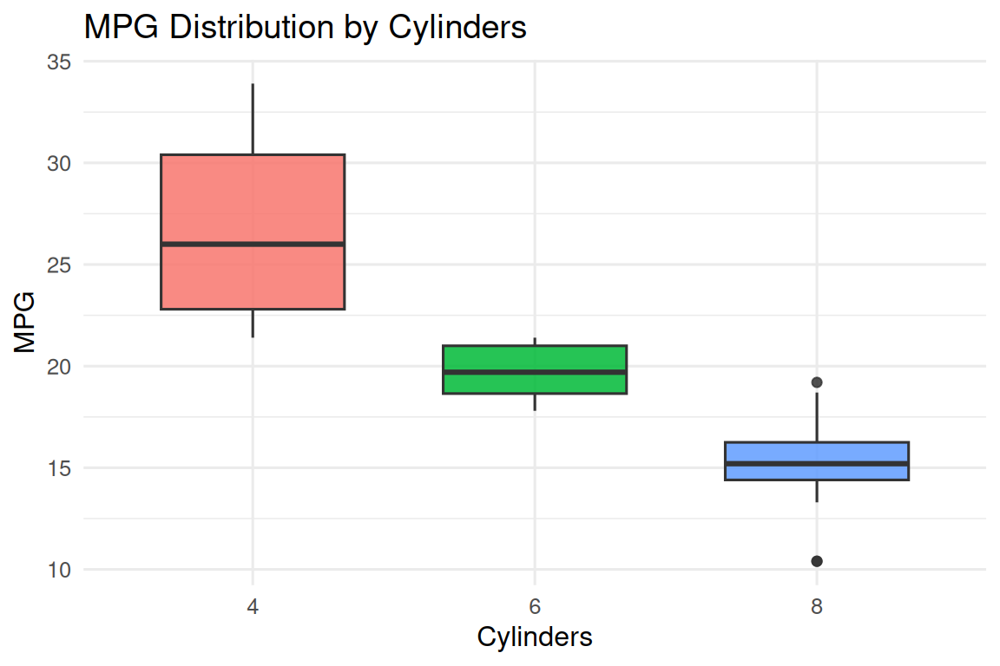
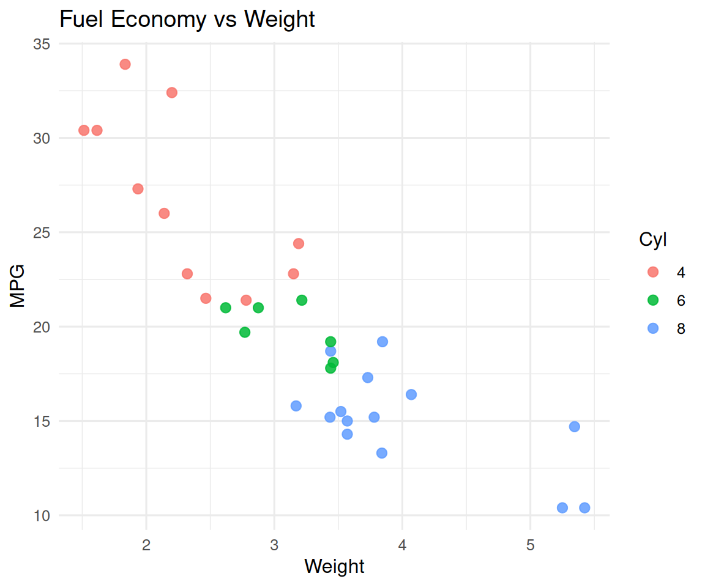
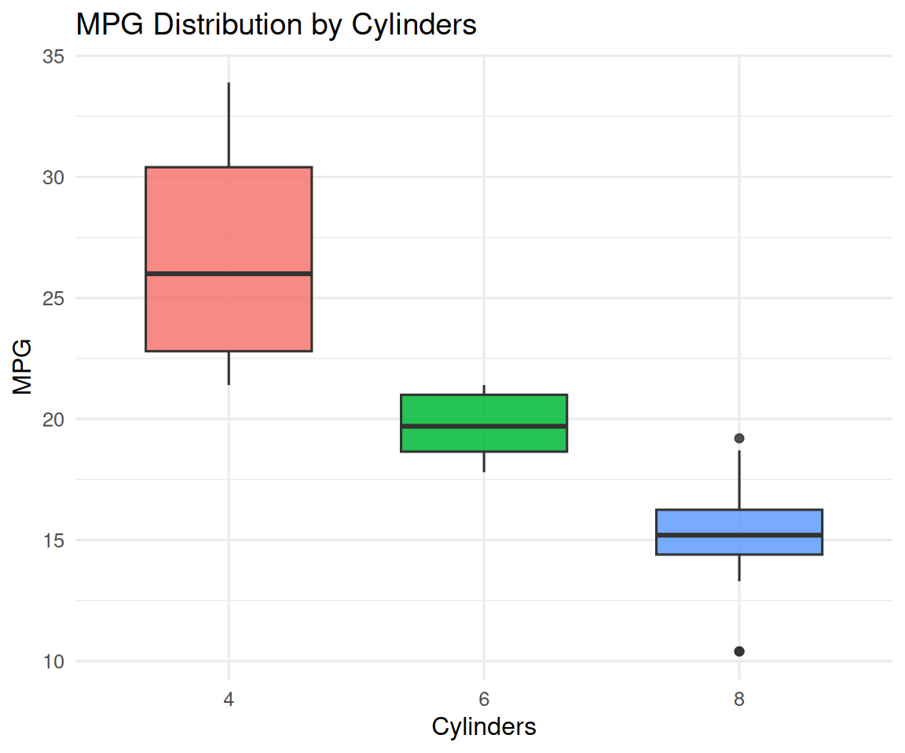

This article demonstrates the callout helpers in myquarto.
Setup
Add Expand/Collapse Controls
Use the buttons below to expand or collapse all sections.
Render Mixed Content in Callouts
fig_scatter <- ggplot(mtcars, aes(wt, mpg, color = factor(cyl))) +
geom_point(size = 2.5, alpha = 0.85) +
labs(title = "Fuel Economy vs Weight", x = "Weight", y = "MPG", color = "Cyl") +
theme_minimal(base_size = 12)
fig_box <- ggplot(mtcars, aes(factor(cyl), mpg, fill = factor(cyl))) +
geom_boxplot(alpha = 0.85, width = 0.65, show.legend = FALSE) +
labs(title = "MPG Distribution by Cylinders", x = "Cylinders", y = "MPG") +
theme_minimal(base_size = 12)
content_items <- list(
"This section is plain Markdown content.\n\n- Item A\n- Item B",
fig_scatter,
fig_box,
head(mtcars, 5),
"Final notes with **bold text** and `inline code`."
)
render_callout_content(
content_list = content_items,
titles = c("Overview", "Figure: Scatter", "Figure: Boxplot", "Data Preview", "Notes"),
callout_type = "note",
collapse = TRUE
)Overview
This section is plain Markdown content.
- Item A
- Item B
Figure: Scatter

Example Plots
Figure: Boxplot

Example Plots
Data Preview
mpg cyl disp hp drat wt qsec vs am gear carb Mazda RX4 21.0 6 160 110 3.90 2.620 16.46 0 1 4 4 Mazda RX4 Wag 21.0 6 160 110 3.90 2.875 17.02 0 1 4 4 Datsun 710 22.8 4 108 93 3.85 2.320 18.61 1 1 4 1 Hornet 4 Drive 21.4 6 258 110 3.08 3.215 19.44 1 0 3 1 Hornet Sportabout 18.7 8 360 175 3.15 3.440 17.02 0 0 3 2
Notes
Final notes with bold text and
inline code.
Only figures
Use the buttons below to expand or collapse all sections.
Example Plots
Figure: Scatter

Example Plots
Figure: Boxplot

Example Plots